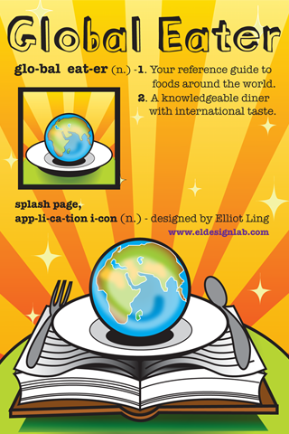

Follow your curiosity
Explore foods by cuisine and move from a name to its definition.
An old favorite. A new beginning.
A little curiosity goes a long way. Global Eater brings a pocket food dictionary back to life—with its original artwork, a growing catalog, and room to make it our own.
An early working app. Built and tested on a Pixel 9 Pro.

Same curious spirit.
A new chapter underneath.
01 / A pocketful of possibilities
Browse a cuisine, look up an unfamiliar name, or save something you want to try. The dictionary lives on your phone.
1,815 recovered + 180 new drafts
Plus two reference sections
Search, browse, and save favorites
Explore foods by cuisine and move from a name to its definition.
Search the catalog, including aliases, or browse the alphabetical index.
Save favorites locally so an interesting discovery is easy to find again.
A catalog in progress. The historical entries need an editorial review, and all 180 additions are drafts. This is a starting point for learning and improving together.
02 / The revival
Original app by Mike Voytovich & Harry Kwan.
Original icon and splash artwork by Elliot Ling.
Global Eater began as an iPhone app: a guide to foods around the world, with a globe on a plate and a wonderfully sunny identity. The recovered catalog and original artwork are the heart of this revival.
Mike, Codex, and Mike’s dot Klek brought the catalog and artwork forward into a new Flutter app. It was built, installed, and tested on a Pixel 9 Pro—turning a remembered project into something we can run and improve.
This is an early working foundation for collaboration and iteration. Try it, notice what feels good and what’s missing, and help shape it into something worth sharing more widely.
03 / Where things stand
A clear picture of what works today, and what still needs a first pass.
The ARM64 development build was installed and launched on a Pixel 9 Pro running Android 17.
The device test loaded the catalog, searched for “pho,” and opened Phở.
The generated iOS project is included, with beginner instructions for Xcode, Simulator, and a physical iPhone.
iOS has not been built or tested for this revival yet. Setup instructions describe the path to try; they are not a claim of iPhone readiness.
Read the iOS setup guide04 / Pull up a chair
The beginner guide takes you from a fresh Mac to your first run—with copy-and-paste commands, expected results, and help when something gets stuck.
Open the beginner guideSource is available now. The Android build is for development, not an app-store release.
Install Flutter and Android Studio. Add Xcode if you want to try iOS.
“Clone” just means download your own working copy of the source from GitHub.
Follow the guide for an Android phone, an iOS simulator, or a physical iPhone.
05 / An invitation, not a finish line
The best version of this app will come from using it together. Here are a few possible next steps—not promises or a fixed roadmap.
Review definitions, spelling, aliases, and sources. Help the recovered catalog feel useful today.
Try larger text, navigation, and favorites on more devices. Give iOS its first real build and test.
Maybe a “want to try” food passport, better pronunciations, or richer references. Start with what we actually need.
Found a rough edge? Have a tasty idea?
Start a conversation on GitHub